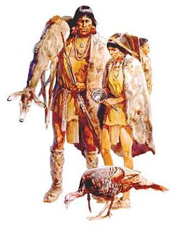
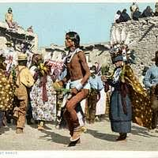
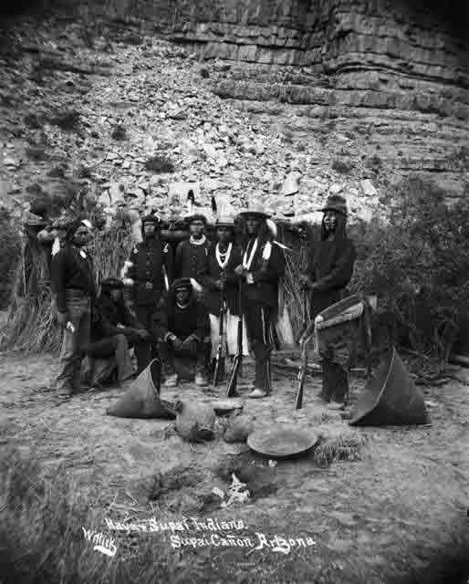
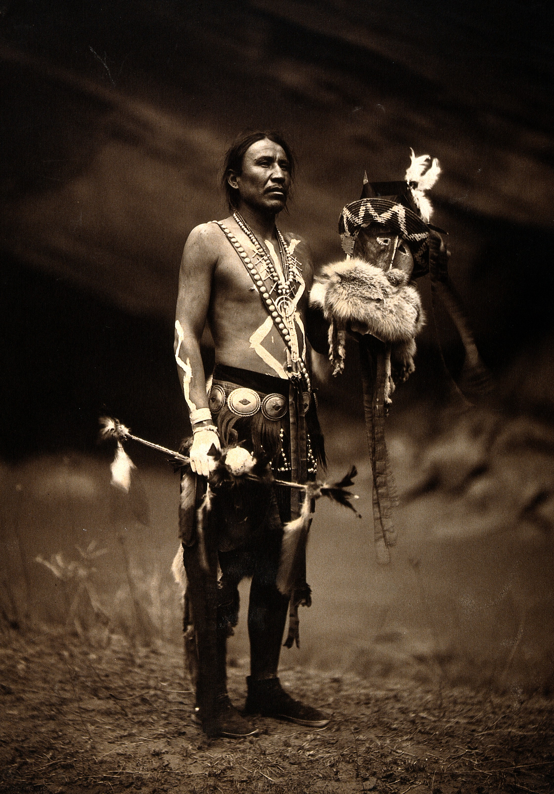
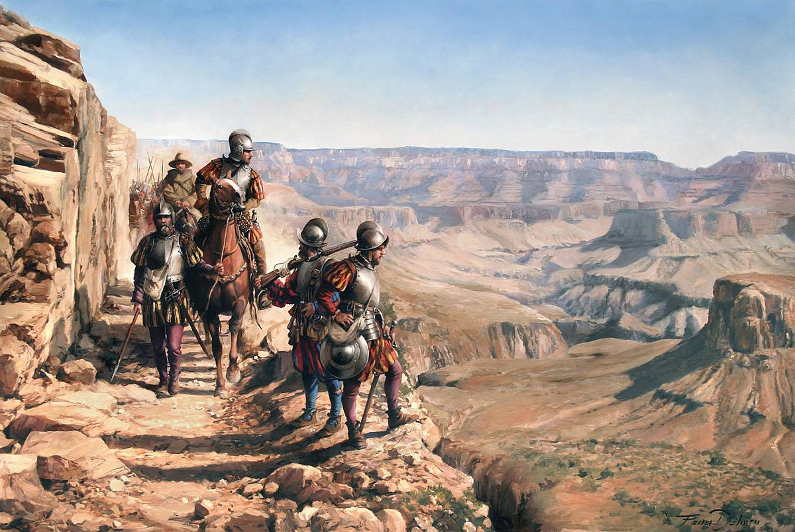
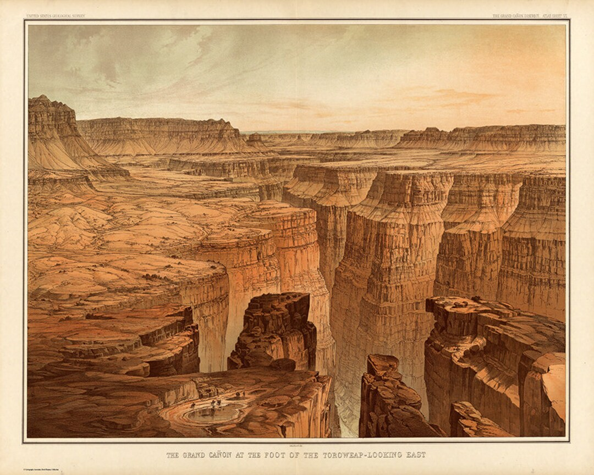
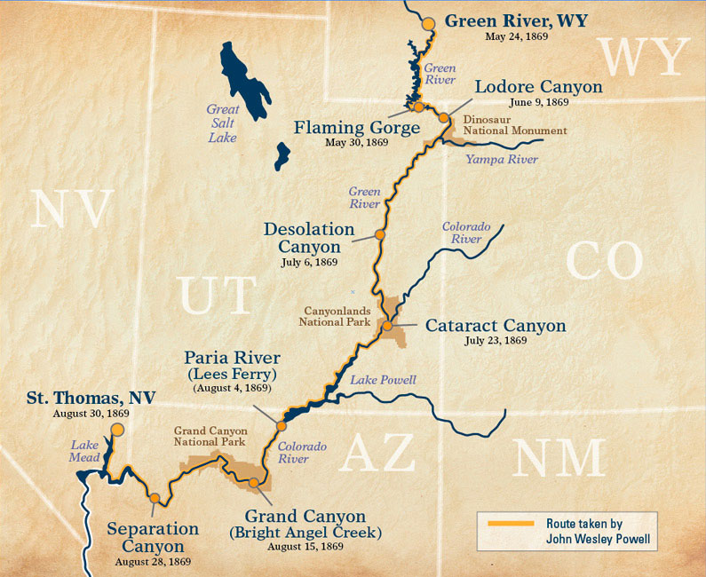

L'histoire
Un site occupé depuis des millénaires, marqué par les peuples autochtones et les explorations modernes.
Les peuples autochtones
Les Ancestral Puebloans
Villages, agriculture, poteries, habitations dans les falaises.

Les Hopis
L'un des peuples les plus anciens, traditions et mythes liés au canyon.

Les Havasupai
Installés dans les vallées, réputés pour leurs cultures et leurs jardins.

Les Navajo
Arrivés plus tard, territoire spirituel important.

L'arrivée des Européens
1540 : l'expédition Cárdenas
Envoyé par l'Espagne, Garcia López de Cárdenas atteint la rive sud du canyon. Son groupe découvre l'immensité du site, mais ne parvient pas à y descendre. C'est le premier Européen connu à l'avoir observé.

XIXe siècle : explorations et relevés
Au XIXe siècle, soldats, explorateurs et scientifiques traversent la région. Ils réalisent les premiers relevés du canyon, malgré les dangers et le manque de chemins. Le site commence à être cartographié avec précision.

1869 : expédition de John Wesley Powell
En 1869, John Wesley Powell mène une descente du fleuve Colorado avec neuf hommes. Ils parcourent des rapides inconnus et collectent des données essentielles. Cette expédition devient la première exploration scientifique du canyon.

Un site protégé
Images du Parc


Patrimoine Mondial
Le Grand Canyon, reconnu pour sa valeur universelle exceptionnelle, représente un patrimoine naturel et culturel majeur. Son histoire, ses paysages et les traditions des peuples autochtones en font un site irremplaçable. L'UNESCO œuvre à préserver ce lieu unique pour les générations futures.